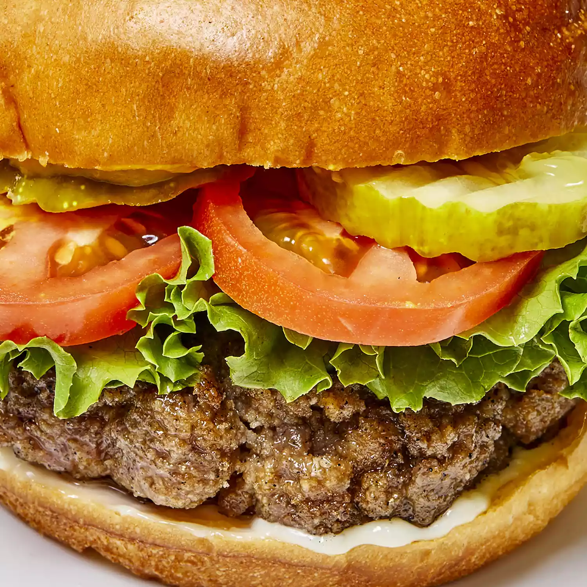

Hamburger Recipe

Description
A hamburger is a sandwich consisting of a cooked meat patty on a bun or roll. You can order a hamburger, fries, and a shake at most fast food restaurants. Hamburgers are traditionally made with ground beef and served with onions, tomatoes, lettuce, ketchup, and other garnishes.
Ingredients
- 2 lbs Ground Beef
- 1 egg, beaten
- 3/4 cup dry bread crumbs
- 3 tablespoons evaporated milk
- 2 tablespoons Worcestershire sauce
- 1/8 teaspoon cayenne pepper
- 2 cloves garlic, minced
Steps
- Preheat grill for high heat
- Mix the ground beef, egg, bread crumbs, evaporated milk, Worcestershire sauce, cayenne pepper, and garlic in a large bowl using your hands. Form the mixture into 8 hamburger patties.
- Lightly oil the grill grate. Grill patties until browned and no longer pink, about 5 minutes per side.
- Enjoy your burgers!